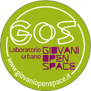

Attualmente abbiamo in programma per il Linux Day lo svolgimento di un installation party, che si terrà al Laboratorio Urbano GOS di Barletta. Durante questa attività si potrà ricevere aiuto nell'installazione di una distribuzione GNU/Linux sul proprio computer o fornire aiuto a chi ne avesse bisogno: l'evento è indirizzato a tutti, anche ai più esperti!
Avremo modo di confrontarci e scambiare opinioni sul mondo del Free & Open Source Software, sulle nuove tecnologie e quant'altro. Soprattutto avremo modo di conoscerci e socializzare, rafforzando la comunità locale del FOSS e di GNU/Linux.
L'installation party sarà preceduto da una breve introduzione al sistema operativo GNU/Linux, durante la quale saranno messi in evidenza i vantaggi di questo sistema operativo ed in cosa si distingue dai principali sistemi operativi proprietari.
Il tema del Linux Day di quest'anno, è l'innovazione. Per questo motivo sarà presentata una nuova distribuzione, della quale proporremo l'installazione: Manjaro Linux, nata da poco più di un anno e basata su Archlinux. Verrà inoltre illustrata e proposta un'altra distribuzione: Linux Mint, basata su Ubuntu.
Anche se non hai mai sentito parlare di GNU/Linux, ti sarà data la possibilità di usarlo in maniera produttiva da subito.
Se hai un vecchio computer che desideri rimettere in funzione, potrebbe essere il momento giusto per farlo!
GNU/Linux è noto per essere un sistema operativo molto veloce, leggero e versatile. Per qualunque esigenza tu abbia, c'è una soluzione!
Porta il tuo computer, se vuoi. In ogni caso unisciti a noi per celebrare quest'anno i trent'anni del progetto GNU ed i 22 anni del kernel Linux.
Saremo al GOS a Barletta, sabato 26 ottobre.